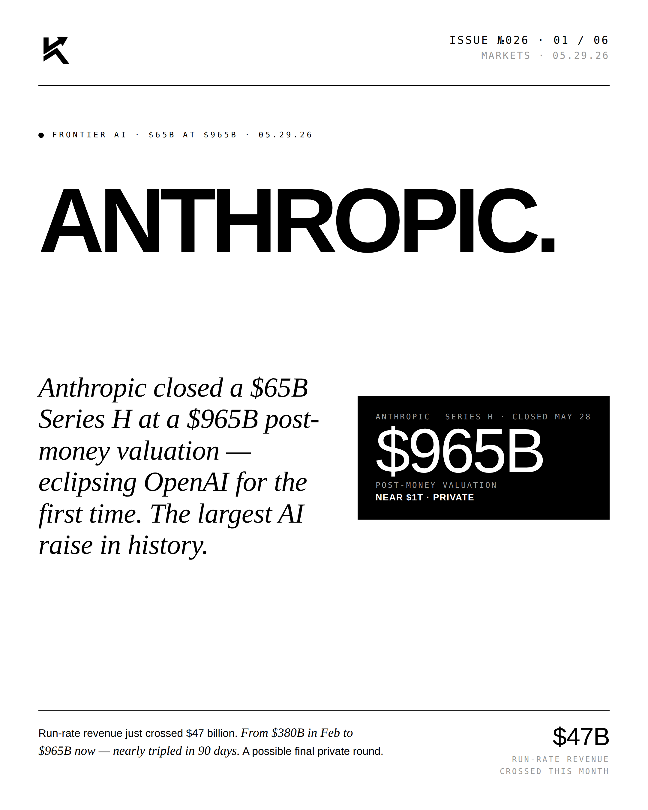
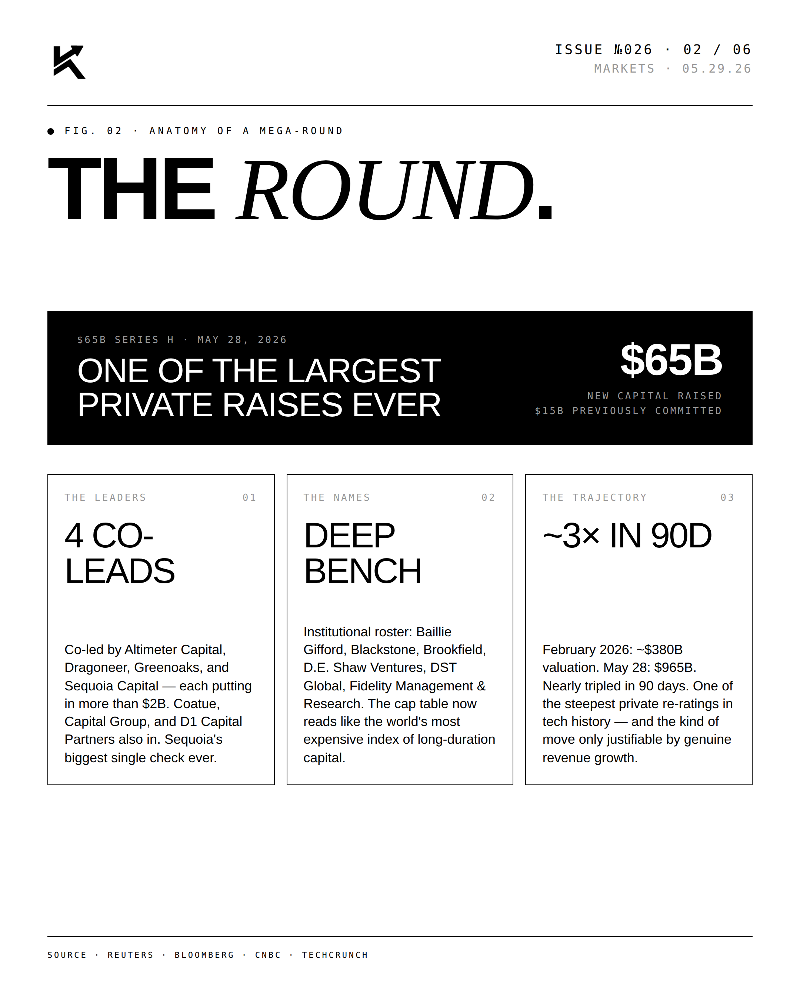
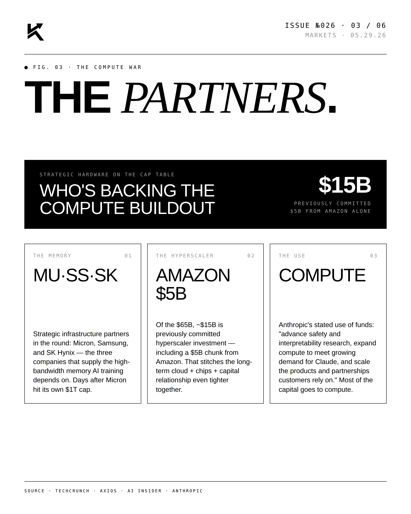
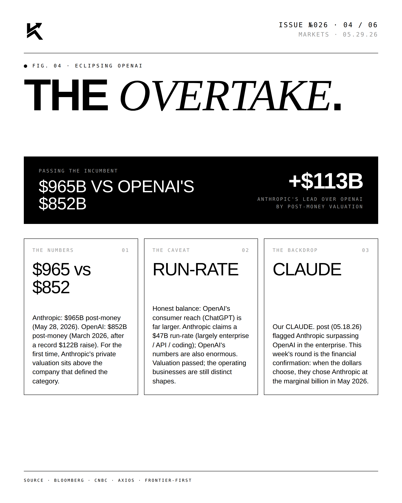
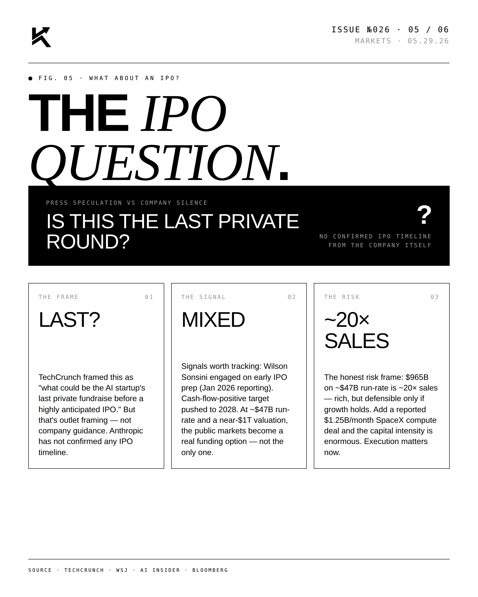
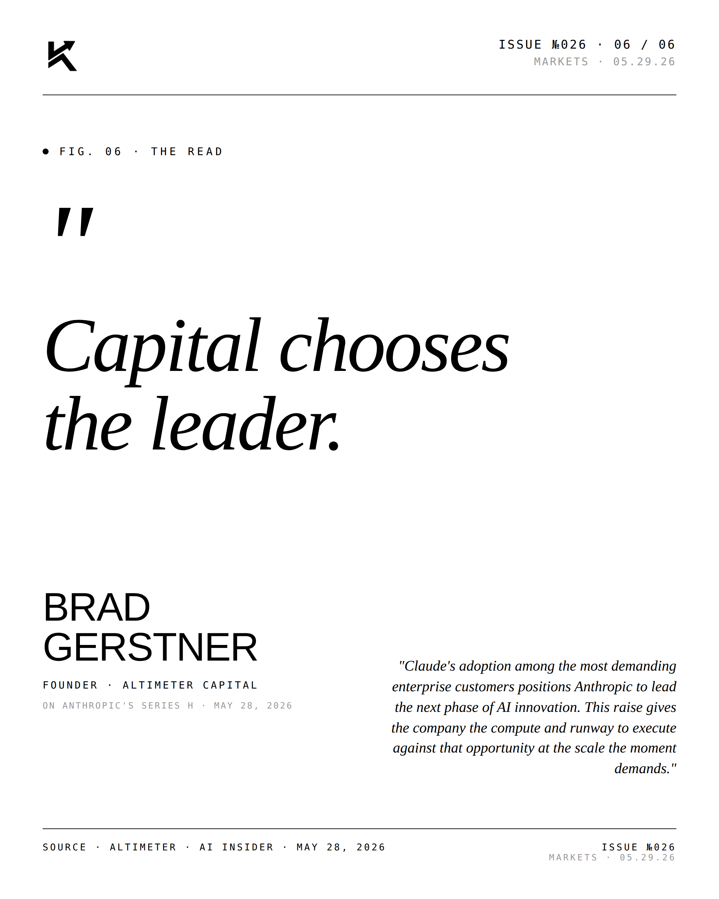

MARKETS · $965B POST-MONEY · 05.31.26
Anthropic.
Anthropic closed a $65B Series H at a $965B post-money valuation — eclipsing OpenAI for the first time. The largest AI raise in history.

The Lead.
Capital is choosing its leader. Five years after founding, Anthropic prints the largest private financing in history and crosses ahead of OpenAI in implied valuation.




"Capital chooses
the leader."BRAD GERSTNERFOUNDER · ALTIMETER CAPITAL · On the Anthropic Series H · May 31, 2026
